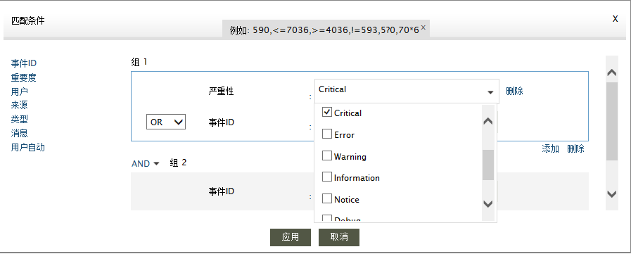
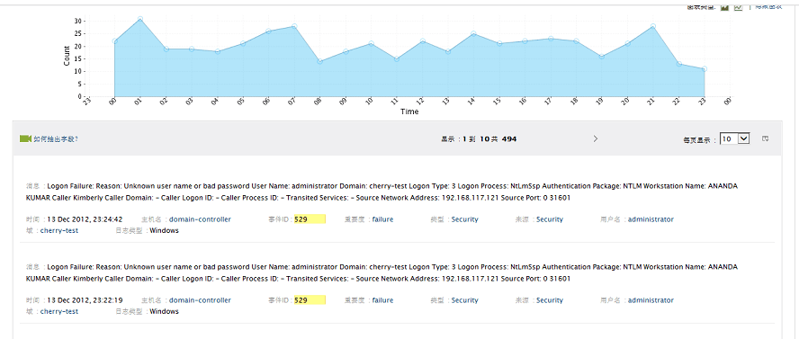
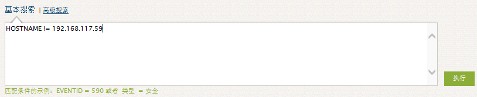
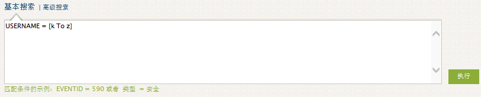
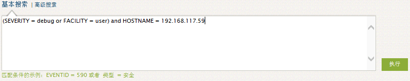

如何搜索
EventLog Analyzer提供了专门的日志搜索功能，你可以搜索原始日志来发现网络异常，如：错误的配置、病毒、非法访问、应用错误等等。点击“搜索”标签。
日志搜索栏如下：
选择具体的主机、主机组
把搜索范围限制到具体的主机或主机组。在文本框中输入或者通过“选择主机”链接选择。如果没有指定主机，就会在所有的主机日志中搜索。
选择日志类型
选择具体的搜索日志类型（例如：Windows事件日志、syslog、Oracle日志等），通过日志类型下拉菜单选择。如果没有指定类型，就会在所有类型的日志中搜索。
默认情况下，即你没有输入主机或主机组、并且选择默认的所有日志类型，那么你就可以搜索所有主机的所有类型的日志。
搜索类型
EventLog Analyzer支持“基本”和“高级”搜索。你可以使用通配符搜索、逻辑搜索、分组搜索和范围搜索。
基本搜索
如果你要手动输入你的搜索字符串（搜索条件），请选择“基本搜索”链接。
搜索字段值
在搜索框中直接输入搜索值。
搜索字段
在搜索框中直接输入字段名称和值。一对字段名称和值表达式为<字段名称> = <字段值>
例如：EVENTID = 529
高级搜索
通过交互式的搜索创建器来帮助你创建复杂的搜索表达式。请选择高级搜索链接。
设置搜索条件
你可以把搜索条件分组，每组可以有过个字段。字段之间和分组直接都可以使用逻辑操作符（AND/OR）来连接。

完成条件定义之后，点击应用按钮。
搜索框中显示刚刚定义的搜索表达式，点击执行按钮开始搜索。
搜索结果中包含结果图表以及所有符合条件的日志。结果图表只显示2周的数据。

 |
说明：如果数据不足2周，那么只能显示现有天数的图表。 |
如何清除和保持查询？
清除搜索
“清除搜索”用来清除当前的搜索条件。
保存搜索
如果你需要搜索结果，那么点击“保存搜索”链接来保存搜索，相应的搜索结果就保存为报表配置文件。
更多示例——基本搜索
使用逻辑操作符
使用逻辑操作符表达式的格式为<字段名称> = <字段值> <逻辑符号> <字段名称> = <字段值>。可以使用的逻辑操作符有：AND、OR、NOT。
例如：HOSTNAME = 192.168.117.59 AND USERNAME = guest
使用比较操作符
使用比较操作符表达式的格式为<字段名称> <比较操作符> <字段值>。可以使用的比较操作符有：=、!=、>、<、>=、 <=。
例如：HOSTNAME != 192.168.117.59

使用通配符
使用通配符表达式的格式为<字段名称> = <部分字段值> <通配符>。可以使用的通配符有：?表示单个字符；*表示多个字符。
例如：HOSTNAME = 192.*
使用词组
使用词组表达式的格式为<字段名称> = <"部分字段值">。使用英文双引号（""）在字段值中定义词组。
例如：MESSAGE = "session"
使用范围
使用范围表达式的格式为<字段名称> = [<起始值> TO <结束值>]。使用英文中括号[]来定义字段值的起始范围。
例如：USERNAME = [k To z]

使用字段分组
使用分组字段表达式的格式为(<字段名称> = <字段值> <逻辑操作符>.<字段名称> = <字段值>) <逻辑操作符>.<字段名称> = <字段值>。把字段使用英文小括号()进行逻辑分组。
例如：(SEVERITY = debug or FACILITY = user) and HOSTNAME = 192.168.117.59

|